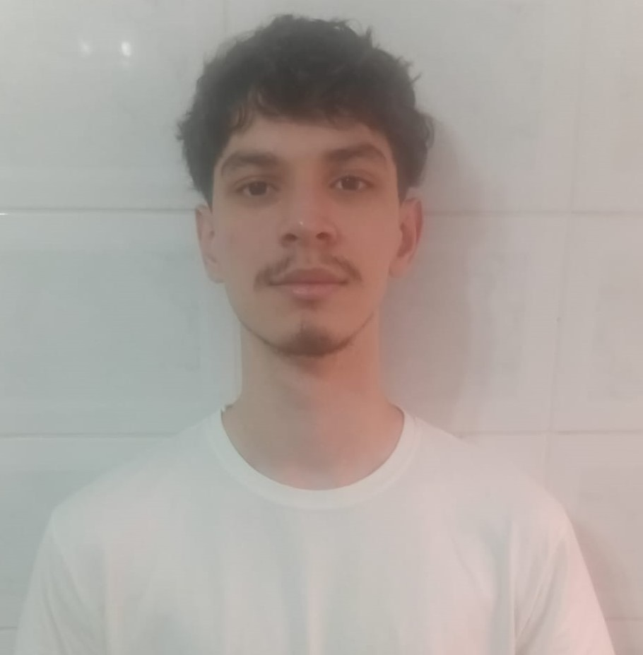

CSV Graph Generator
Interface que lê arquivos CSV e transforma os dados escolhidos em gráficos.
Ver repositório ↗
Desenvolvedor de Software
Tenho 18 anos e curso Desenvolvimento de Software Multiplataforma na FATEC Jacareí. Busco oportunidades para aplicar meus conhecimentos, criar soluções úteis e ganhar experiência. Já participei de projetos acadêmicos e pessoais, principalmente no back-end, sempre com foco em qualidade e eficiência.
Aprendizagem Baseada em Projetos
Sistema desenvolvido para melhorar a comunicação da instituição com os alunos.
Atuei principalmente no back-end, criando as classes e seus métodos e a forma como elas interagem com o banco de dados. No front-end, tive participações menores, como a responsividade da tabela.
Projeto em parceria com o INPE para que seus pesquisadores tenham acesso a dados antigos que não estavam presentes na interface atual.
Participei da criação de páginas da aplicação, da lógica de consultas e dos filtros feitos pela interface, e da implementação do mapa com seus polígonos.
Sistema de gestão de leads desenvolvido para a 1000 Vale, que centraliza o gerenciamento de clientes e oportunidades comerciais e torna o acompanhamento dos leads mais organizado e eficiente.
Atuei principalmente na construção do back-end: modelagem das entidades, criação das rotas da API e das regras de negócio de cadastro e acompanhamento dos leads ao longo do funil de vendas, além da integração com o PostgreSQL.
Também desenvolvi o dashboard e seus gráficos, criando as consultas que agregam os dados dos leads e os endpoints que alimentam os indicadores da interface, para que a equipe comercial acompanhe o desempenho de forma visual.
Sistema integrado de baixo custo para controle de acesso em edifícios, com terminal ESP32 (QR Code rotativo e NFC), aplicativo mobile em Flutter e back-end em Node.js/TypeScript comunicando-se por REST e MQTT.
Montei a base do aplicativo em Flutter: estrutura com Riverpod e go_router, tema claro e escuro do design system, testes iniciais e o guia de como rodar o app. Também defini o contrato OpenAPI v1 da API, com as rotas iniciais.
No back-end, trabalhei na confiabilidade da comunicação via MQTT: outbox para o envio de comandos aos terminais, limite de conexões com o banco de dados e as regras de retenção e de prazos da deduplicação de mensagens.
Por conta própria
Interface que lê arquivos CSV e transforma os dados escolhidos em gráficos.
Ver repositório ↗O que uso
Sobre mim
Contato
Acompanhe meus perfis ou entre em contato por eles.